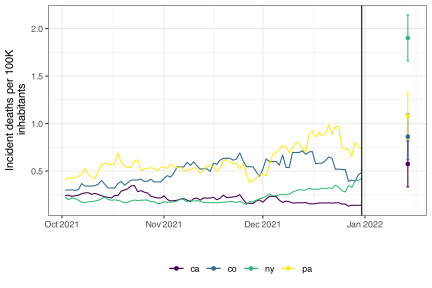

# install.packages("pak")
# Install our packages from GitHub:
pak::pkg_install("cmu-delphi/epidatr")
pak::pkg_install("cmu-delphi/epiprocess")
pak::pkg_install("cmu-delphi/epipredict")
pak::pkg_install("cmu-delphi/epidatasets")
# Other model-fitting packages we use in this book (via epipredict):
pak::pkg_install("poissonreg")
pak::pkg_install("ranger")
pak::pkg_install("xgboost")
# Other data processing, model evaluation, example data, and other packages we
# use in this book:
pak::pkg_install("RcppRoll")
pak::pkg_install("tidyverse")
pak::pkg_install("tidymodels")
pak::pkg_install("broom")
pak::pkg_install("performance")
pak::pkg_install("modeldata")
pak::pkg_install("see")
pak::pkg_install("sessioninfo")Introduction to Epidemiological Forecasting
Delphi Tools, Data, and Lessons
Preface
Caution
This book is still under construction and may not yet be fully self-contained or reproducible. But it hopefully will be!
This book describes some of the functionality of the {epiprocess} and {epipredict} R packages, with an eye toward creating various types of signal processing and forecast creation for epidemiological data. The goal is to be able to load, inspect, process, and forecast — using simple baselines to more elaborate customizations.
Installation
The following commands install the latest versions of the packages we use in this book:
Much of the data used for illustration can be loaded directly from Delphi’s Epidata API which is built and maintained by the Carnegie Mellon University Delphi research group. We have tried to provide most of the data used in these examples in a separate package, {epidatasets}, but it can also be accessed using {epidatr}, an R interface to the API and the successor to {covidcast}. These are also available from GitHub:
pak::pkg_install("cmu-delphi/epidatasets")
pak::pkg_install("cmu-delphi/epidatr")Encountering installation issues? Click here to show some potential solutions.
Linux installation issues: compilation errors or slowness
If you are using Linux and encounter any compilation errors above, or if compilation is taking very long, you might try using the RStudio (now called Posit) Package Manager to install binaries. You can try running this command
options(
repos = c(
# contains binaries for Linux:
RSPM = "https://packagemanager.rstudio.com/all/latest",
# backup CRAN mirror of your choice:
CRAN = "https://cran.rstudio.com/"
)
)Reproducibility
The above commands will give you the current versions of the packages used in this book. If you’re having trouble reproducing some of the results, it may be due to package updates that took place after the book was last updated. To match the versions we used to generate this book, you can use the steps below.
First: set up and store a GitHub PAT
If you don’t already have a GitHub PAT, you can use the following helper functions to create one:
# Run this once:
install.packages("usethis")#> Installing usethis [2.2.0] ...
#> OK [linked cache in 0.19 milliseconds]
#> * Installed 1 package in 0.21 seconds.usethis::create_github_token(
scopes = "public_repo",
description = "For public repo access"
)This will open a web browser window allowing you to describe and customize settings of the PAT. Scroll to the bottom and click “Generate token”. You’ll see a screen that has ghp_<lots of letters and numbers> with a green background; you can click the two-squares (“copy”) icon to copy this ghp_...... string to the clipboard.
Either A: Download and use the renv.lock
# Run this once:
install.packages(c("renv", "gitcreds"))
download.file("https://raw.githubusercontent.com/cmu-delphi/delphi-tooling-book/main/renv.lock", "delphi-tooling-book.renv.lock")
# Run this in a fresh session each time you'd like to use this set of versions.
# Warning: don't save your GitHub PAT in a file you might share with others;
# look into `gitcreds::gitcreds_set()` or `usethis::edit_r_environ()` instead.
Sys.setenv("GITHUB_PAT" = "ghp_............")
renv::use(lockfile = "delphi-tooling-book.renv.lock")
# If you get 401 errors, you may need to regenerate your GitHub PAT or check if
# `gitcreds::gitcreds_get()` is detecting an old PAT you have saved somewhere.Or B: Download the book and use its .Rprofile
- Download the book here and unzip it.
- One-time setup: launch R inside the delphi-tooling-book directory (to use its
.Rprofilefile) and run
# Warning: don't save your GitHub PAT in a file you might share with others;
# look into `gitcreds::gitcreds_set()` or `usethis::edit_r_environ()` instead.
Sys.setenv("GITHUB_PAT" = "ghp_............")
renv::restore() # downloads the appropriate package versions- To use this set of versions: launch R inside the delphi-tooling-book directory.
Other issues
Please let us know! You can file an issue with the book here, or with one of the individual packages at their own issue pages: epidatr, epiprocess, epipredict.
Documentation
You can view the complete documentation for these packages at
Attribution
This document contains a number of datasets that are a modified part of the COVID-19 Data Repository by the Center for Systems Science and Engineering (CSSE) at Johns Hopkins University as republished in the COVIDcast Epidata API. These data are licensed under the terms of the Creative Commons Attribution 4.0 International license by the Johns Hopkins University on behalf of its Center for Systems Science in Engineering. Copyright Johns Hopkins University 2020.
From the COVIDcast Epidata API: These signals are taken directly from the JHU CSSE COVID-19 GitHub repository without changes.
Quick-start example
These packages come with some built-in historical data for illustration, but up-to-date versions could be downloaded with the {epidatr} or {covidcast} packages and processed using {epiprocess}.1
library(epipredict)
jhu <- case_death_rate_subset
jhu#> An `epi_df` object, 20,496 x 4 with metadata:
#> * geo_type = state
#> * time_type = day
#> * as_of = 2022-05-31 12:08:25
#>
#> # A tibble: 20,496 × 4
#> geo_value time_value case_rate death_rate
#> * <chr> <date> <dbl> <dbl>
#> 1 ak 2020-12-31 35.9 0.158
#> 2 al 2020-12-31 65.1 0.438
#> 3 ar 2020-12-31 66.0 1.27
#> 4 as 2020-12-31 0 0
#> 5 az 2020-12-31 76.8 1.10
#> 6 ca 2020-12-31 96.0 0.751
#> # ℹ 20,490 more rowsTo create and train a simple auto-regressive forecaster to predict the death rate two weeks into the future using past (lagged) deaths and cases, we could use the following function.
two_week_ahead <- arx_forecaster(
jhu,
outcome = "death_rate",
predictors = c("case_rate", "death_rate"),
args_list = arx_args_list(
lags = list(case_rate = c(0, 1, 2, 3, 7, 14), death_rate = c(0, 7, 14)),
ahead = 14
)
)In this case, we have used a number of different lags for the case rate, while only using 3 weekly lags for the death rate (as predictors). The result is both a fitted model object which could be used any time in the future to create different forecasts, as well as a set of predicted values (and prediction intervals) for each location 14 days after the last available time value in the data.
two_week_ahead$epi_workflow#> ══ Epi Workflow [trained] ═══════════════════════════════════════════════════
#> Preprocessor: Recipe
#> Model: linear_reg()
#> Postprocessor: Frosting
#>
#> ── Preprocessor ─────────────────────────────────────────────────────────────
#> 6 Recipe Steps
#>
#> • step_epi_lag()
#> • step_epi_lag()
#> • step_epi_ahead()
#> • step_naomit()
#> • step_naomit()
#> • step_training_window()
#>
#> ── Model ────────────────────────────────────────────────────────────────────
#>
#> Call:
#> stats::lm(formula = ..y ~ ., data = data)
#>
#> Coefficients:
#> (Intercept) lag_0_case_rate lag_1_case_rate lag_2_case_rate
#> -0.0073358 0.0030365 0.0012467 0.0009536
#> lag_3_case_rate lag_7_case_rate lag_14_case_rate lag_0_death_rate
#> 0.0011425 0.0012481 0.0003041 0.1351769
#> lag_7_death_rate lag_14_death_rate
#> 0.1471127 0.1062473
#>
#> ── Postprocessor ────────────────────────────────────────────────────────────
#> 5 Frosting Layers
#>
#> • layer_predict()
#> • layer_residual_quantiles()
#> • layer_add_forecast_date()
#> • layer_add_target_date()
#> • layer_threshold()The fitted model here involved preprocessing the data to appropriately generate lagged predictors, estimating a linear model with stats::lm() and then postprocessing the results to be meaningful for epidemiological tasks. We can also examine the predictions.
two_week_ahead$predictions#> # A tibble: 56 × 5
#> geo_value .pred .pred_distn forecast_date target_date
#> <chr> <dbl> <dist> <date> <date>
#> 1 ak 0.449 [0.05, 0.95]<q-rng> 2021-12-31 2022-01-14
#> 2 al 0.574 [0.05, 0.95]<q-rng> 2021-12-31 2022-01-14
#> 3 ar 0.673 [0.05, 0.95]<q-rng> 2021-12-31 2022-01-14
#> 4 as 0 [0.05, 0.95]<q-rng> 2021-12-31 2022-01-14
#> 5 az 0.679 [0.05, 0.95]<q-rng> 2021-12-31 2022-01-14
#> 6 ca 0.575 [0.05, 0.95]<q-rng> 2021-12-31 2022-01-14
#> # ℹ 50 more rowsThe results above show a distributional forecast produced using data through the end of 2021 for the 14th of January 2022. A prediction for the death rate per 100K inhabitants is available for every state (geo_value) along with a 90% predictive interval. The figure below displays the forecast for a small handful of states. The vertical black line is the forecast date. The forecast doesn’t appear to be particularly good, but our choices above were intended to be illustrative of the functionality rather than optimized for accuracy.
Code
samp_geos <- c("ca", "co", "ny", "pa")
hist <- jhu %>%
filter(
geo_value %in% samp_geos,
time_value >= max(time_value) - 90L
)
preds <- two_week_ahead$predictions %>%
filter(geo_value %in% samp_geos) %>%
mutate(q = nested_quantiles(.pred_distn)) %>%
unnest(q) %>%
pivot_wider(names_from = tau, values_from = q)
ggplot(hist, aes(color = geo_value)) +
geom_line(aes(time_value, death_rate)) +
theme_bw() +
geom_errorbar(data = preds, aes(x = target_date, ymin = `0.05`, ymax = `0.95`)) +
geom_point(data = preds, aes(target_date, .pred)) +
geom_vline(data = preds, aes(xintercept = forecast_date)) +
scale_colour_viridis_d(name = "") +
scale_x_date(date_labels = "%b %Y") +
theme(legend.position = "bottom") +
labs(x = "", y = "Incident deaths per 100K\n inhabitants")
Contents
The remainder of this book examines this software in more detail, illustrating some of the flexibility that is available.
Session Information.
See also Section 1.
sessioninfo::session_info()#> ─ Session info ────────────────────────────────────────────────────────────
#> setting value
#> version R version 4.1.3 (2022-03-10)
#> os Fedora Linux 36 (Workstation Edition)
#> system x86_64, linux-gnu
#> ui X11
#> language (EN)
#> collate en_US.UTF-8
#> ctype en_US.UTF-8
#> tz America/Los_Angeles
#> date 2023-06-20
#> pandoc 2.14.0.3 @ /usr/bin/ (via rmarkdown)
#>
#> ─ Packages ────────────────────────────────────────────────────────────────
#> ! package * version date (UTC) lib source
#> P anytime 0.3.9 2020-08-27 [?] RSPM (R 4.1.3)
#> P assertthat 0.2.1 2019-03-21 [?] CRAN (R 4.0.5)
#> P backports 1.4.1 2021-12-13 [?] CRAN (R 4.0.5)
#> P broom 1.0.5 2023-06-09 [?] RSPM (R 4.1.3)
#> P cellranger 1.1.0 2016-07-27 [?] CRAN (R 4.0.5)
#> P checkmate 2.2.0 2023-04-27 [?] RSPM (R 4.1.3)
#> P class 7.3-20 2022-01-16 [?] CRAN (R 4.1.3)
#> P cli 3.6.1 2023-03-23 [?] RSPM (R 4.1.3)
#> P codetools 0.2-19 2023-02-01 [?] RSPM (R 4.1.3)
#> P colorspace 2.1-0 2023-01-23 [?] RSPM (R 4.1.3)
#> P crayon 1.5.1 2022-03-26 [?] CRAN (R 4.0.5)
#> P data.table 1.14.8 2023-02-17 [?] RSPM (R 4.1.3)
#> P DBI 1.1.3 2022-06-18 [?] CRAN (R 4.1.3)
#> P dbplyr 2.2.1 2022-06-27 [?] CRAN (R 4.1.3)
#> P digest 0.6.31 2022-12-11 [?] RSPM (R 4.1.3)
#> P distributional 0.3.2 2023-03-22 [?] RSPM (R 4.1.3)
#> P dplyr * 1.1.2 2023-04-20 [?] RSPM (R 4.1.3)
#> P ellipsis 0.3.2 2021-04-29 [?] CRAN (R 4.0.5)
#> P epidatasets * 0.0.1 2023-06-20 [?] Github (cmu-delphi/epidatasets@cc8f2a0)
#> P epidatr * 0.6.0 2023-06-20 [?] Github (cmu-delphi/epidatr@46d2d54)
#> P epipredict * 0.0.5 2023-06-20 [?] Github (cmu-delphi/epipredict@206f0ef)
#> P epiprocess * 0.6.0.9999 2023-06-20 [?] Github (cmu-delphi/epiprocess@2f873ca)
#> P evaluate 0.21 2023-05-05 [?] RSPM (R 4.1.3)
#> P fansi 1.0.4 2023-01-22 [?] RSPM (R 4.1.3)
#> P farver 2.1.1 2022-07-06 [?] RSPM (R 4.1.3)
#> P fastmap 1.1.1 2023-02-24 [?] RSPM (R 4.1.3)
#> P forcats * 0.5.1 2021-01-27 [?] CRAN (R 4.0.5)
#> P fs 1.6.2 2023-04-25 [?] RSPM (R 4.1.3)
#> P future 1.26.1 2022-05-27 [?] CRAN (R 4.0.5)
#> P future.apply 1.9.0 2022-04-25 [?] CRAN (R 4.0.5)
#> P generics 0.1.3 2022-07-05 [?] RSPM (R 4.1.3)
#> P ggplot2 * 3.4.2 2023-04-03 [?] RSPM (R 4.1.3)
#> P globals 0.16.2 2022-11-21 [?] RSPM (R 4.1.3)
#> P glue 1.6.2 2022-02-24 [?] CRAN (R 4.0.5)
#> P gower 1.0.0 2022-02-03 [?] CRAN (R 4.0.5)
#> P gtable 0.3.3 2023-03-21 [?] RSPM (R 4.1.3)
#> P hardhat 1.3.0 2023-03-30 [?] RSPM (R 4.1.3)
#> P haven 2.5.0 2022-04-15 [?] CRAN (R 4.0.5)
#> P hms 1.1.1 2021-09-26 [?] CRAN (R 4.0.5)
#> P htmltools 0.5.5 2023-03-23 [?] RSPM (R 4.1.3)
#> P httr 1.4.3 2022-05-04 [?] CRAN (R 4.0.5)
#> P ipred 0.9-13 2022-06-02 [?] CRAN (R 4.0.5)
#> P jsonlite 1.8.5 2023-06-05 [?] RSPM (R 4.1.3)
#> P knitr 1.43 2023-05-25 [?] RSPM (R 4.1.3)
#> P labeling 0.4.2 2020-10-20 [?] CRAN (R 4.0.5)
#> P lattice 0.21-8 2023-04-05 [?] RSPM (R 4.1.3)
#> P lava 1.6.10 2021-09-02 [?] CRAN (R 4.0.5)
#> P lifecycle 1.0.3 2022-10-07 [?] RSPM (R 4.1.3)
#> P listenv 0.8.0 2019-12-05 [?] CRAN (R 4.0.5)
#> P lubridate 1.8.0 2021-10-07 [?] RSPM (R 4.1.3)
#> P magrittr 2.0.3 2022-03-30 [?] CRAN (R 4.0.5)
#> P MASS 7.3-60 2023-05-04 [?] RSPM (R 4.1.3)
#> P Matrix 1.5-4.1 2023-05-18 [?] RSPM (R 4.1.3)
#> P MatrixModels 0.5-1 2022-09-11 [?] RSPM (R 4.1.3)
#> P MMWRweek 0.1.3 2020-04-22 [?] RSPM (R 4.1.3)
#> P modelr 0.1.8 2020-05-19 [?] CRAN (R 4.0.5)
#> P munsell 0.5.0 2018-06-12 [?] CRAN (R 4.0.5)
#> P nnet 7.3-17 2022-01-16 [?] CRAN (R 4.1.3)
#> P parallelly 1.32.0 2022-06-07 [?] CRAN (R 4.0.5)
#> P parsnip * 1.1.0 2023-04-12 [?] RSPM (R 4.1.3)
#> P pillar 1.9.0 2023-03-22 [?] RSPM (R 4.1.3)
#> P pkgconfig 2.0.3 2019-09-22 [?] CRAN (R 4.0.5)
#> P prodlim 2019.11.13 2019-11-17 [?] CRAN (R 4.0.5)
#> P purrr * 1.0.1 2023-01-10 [?] RSPM (R 4.1.3)
#> P quantreg 5.95 2023-04-08 [?] RSPM (R 4.1.3)
#> P R.cache 0.16.0 2022-07-21 [?] RSPM (R 4.1.3)
#> P R.methodsS3 1.8.2 2022-06-13 [?] RSPM (R 4.1.3)
#> P R.oo 1.25.0 2022-06-12 [?] RSPM (R 4.1.3)
#> P R.utils 2.12.2 2022-11-11 [?] RSPM (R 4.1.3)
#> P R6 2.5.1 2021-08-19 [?] CRAN (R 4.0.5)
#> P Rcpp 1.0.10 2023-01-22 [?] RSPM (R 4.1.3)
#> P readr * 2.1.2 2022-01-30 [?] CRAN (R 4.0.5)
#> P readxl 1.4.0 2022-03-28 [?] CRAN (R 4.0.5)
#> P recipes 1.0.6 2023-04-25 [?] RSPM (R 4.1.3)
#> P renv 0.17.3 2023-04-06 [?] RSPM (R 4.1.3)
#> P reprex 2.0.1 2021-08-05 [?] CRAN (R 4.0.5)
#> P rlang 1.1.1 2023-04-28 [?] RSPM (R 4.1.3)
#> P rmarkdown 2.22 2023-06-01 [?] RSPM (R 4.1.3)
#> P rpart 4.1.16 2022-01-24 [?] CRAN (R 4.1.3)
#> P rstudioapi 0.14 2022-08-22 [?] RSPM (R 4.1.3)
#> P rvest 1.0.2 2021-10-16 [?] CRAN (R 4.0.5)
#> P scales 1.2.1 2022-08-20 [?] RSPM (R 4.1.3)
#> P sessioninfo 1.2.2 2021-12-06 [?] CRAN (R 4.1.3)
#> P SparseM 1.81 2021-02-18 [?] RSPM (R 4.1.3)
#> P stringi 1.7.12 2023-01-11 [?] RSPM (R 4.1.3)
#> P stringr * 1.5.0 2022-12-02 [?] RSPM (R 4.1.3)
#> P styler 1.10.1 2023-06-05 [?] RSPM (R 4.1.3)
#> P survival 3.2-13 2021-08-24 [?] CRAN (R 4.1.3)
#> P tibble * 3.2.1 2023-03-20 [?] RSPM (R 4.1.3)
#> P tidyr * 1.3.0 2023-01-24 [?] RSPM (R 4.1.3)
#> P tidyselect 1.2.0 2022-10-10 [?] RSPM (R 4.1.3)
#> P tidyverse * 1.3.1 2021-04-15 [?] CRAN (R 4.0.5)
#> P timeDate 3043.102 2018-02-21 [?] CRAN (R 4.0.5)
#> P tsibble 1.1.3 2022-10-09 [?] RSPM (R 4.1.3)
#> P tzdb 0.4.0 2023-05-12 [?] RSPM (R 4.1.3)
#> P utf8 1.2.3 2023-01-31 [?] RSPM (R 4.1.3)
#> P vctrs 0.6.3 2023-06-14 [?] CRAN (R 4.1.3)
#> P viridisLite 0.4.2 2023-05-02 [?] RSPM (R 4.1.3)
#> P withr 2.5.0 2022-03-03 [?] CRAN (R 4.0.5)
#> P workflows 1.1.3 2023-02-22 [?] RSPM (R 4.1.3)
#> P xfun 0.39 2023-04-20 [?] RSPM (R 4.1.3)
#> P xml2 1.3.3 2021-11-30 [?] CRAN (R 4.0.5)
#> P yaml 2.3.7 2023-01-23 [?] RSPM (R 4.1.3)
#>
#> [1] /home/fullname/.cache/R/renv/library/delphi-tooling-book-1266ecb6/R-4.1/x86_64-redhat-linux-gnu
#> [2] /home/fullname/.cache/R/renv/sandbox/R-4.1/x86_64-redhat-linux-gnu/60c4e220
#>
#> P ── Loaded and on-disk path mismatch.
#>
#> ───────────────────────────────────────────────────────────────────────────COVIDcast data and other epidemiological signals for non-Covid related illnesses are available with
{epidatr}, which interfaces directly to Delphi’s Epidata API.↩︎